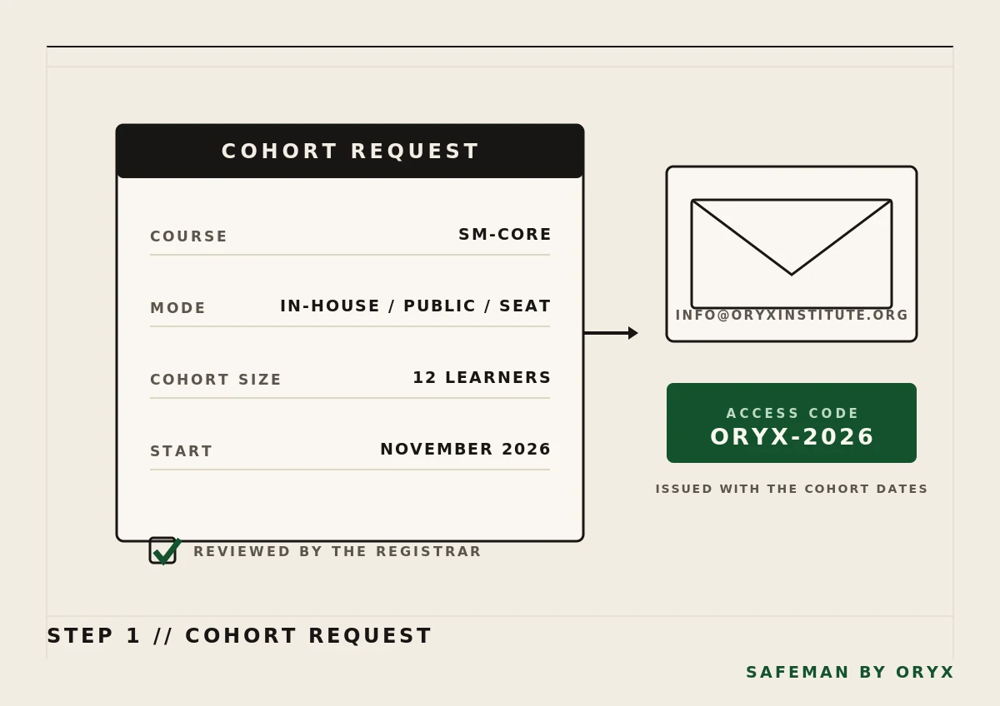
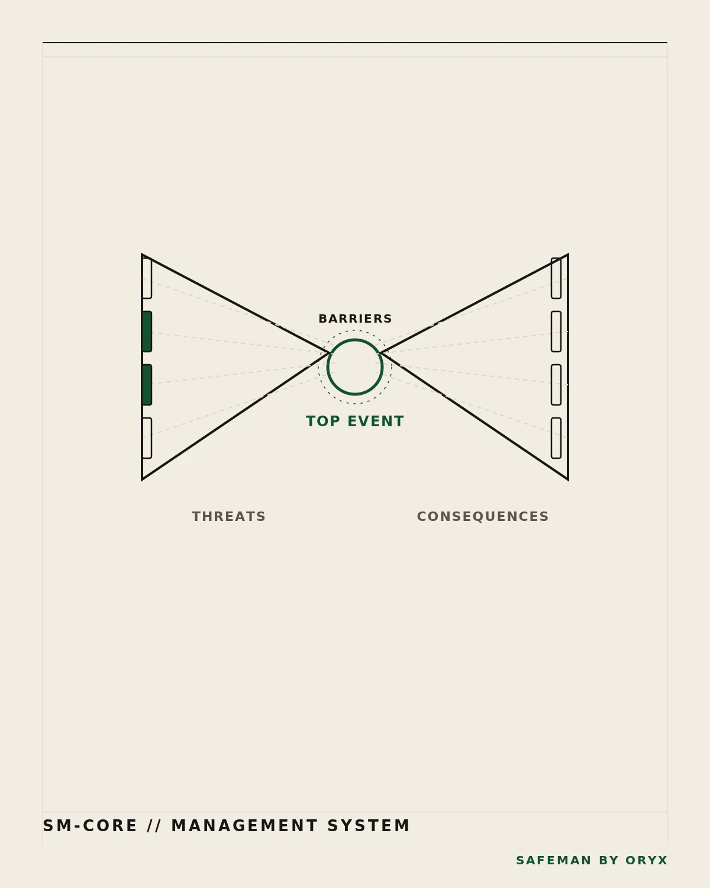
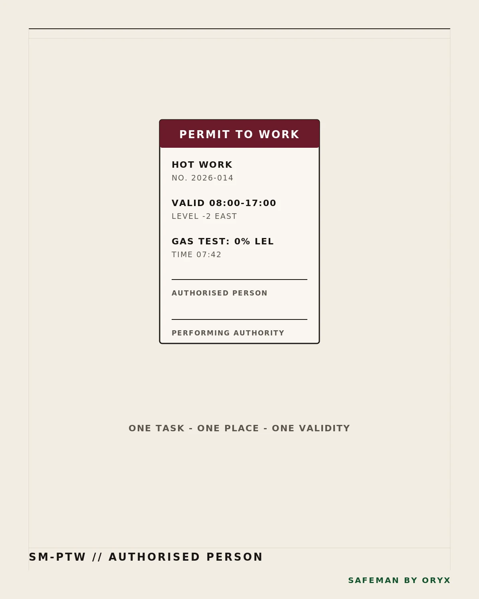
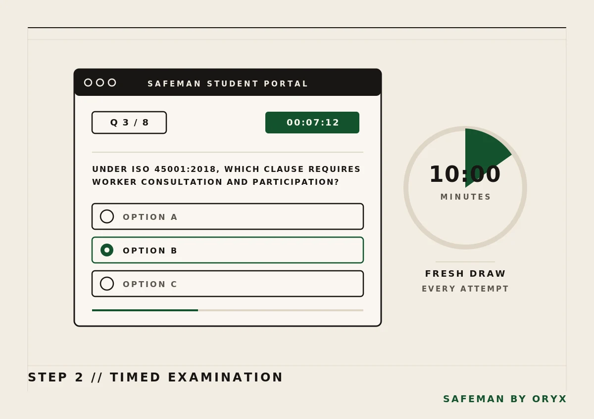
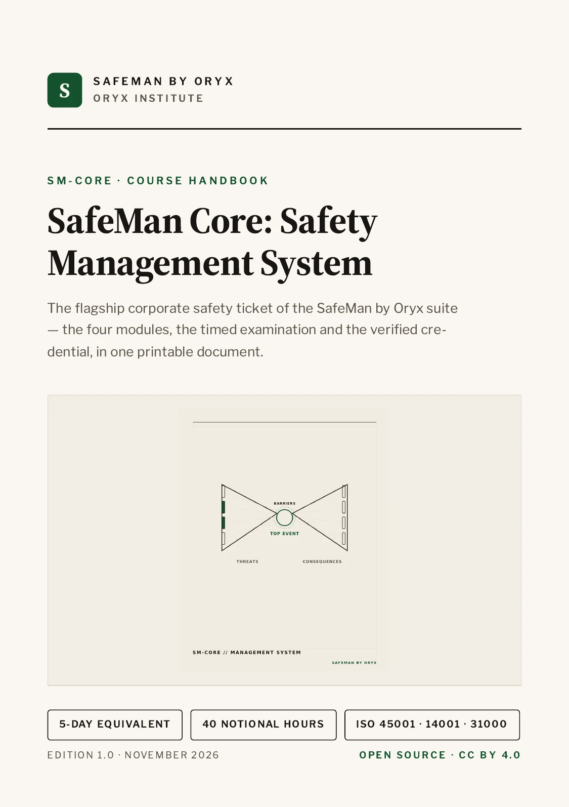
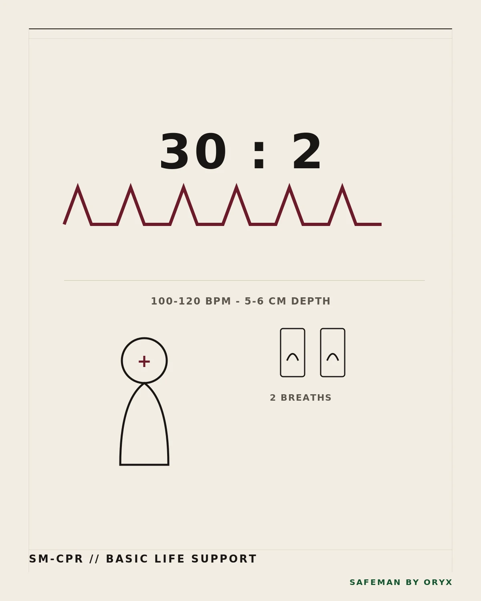
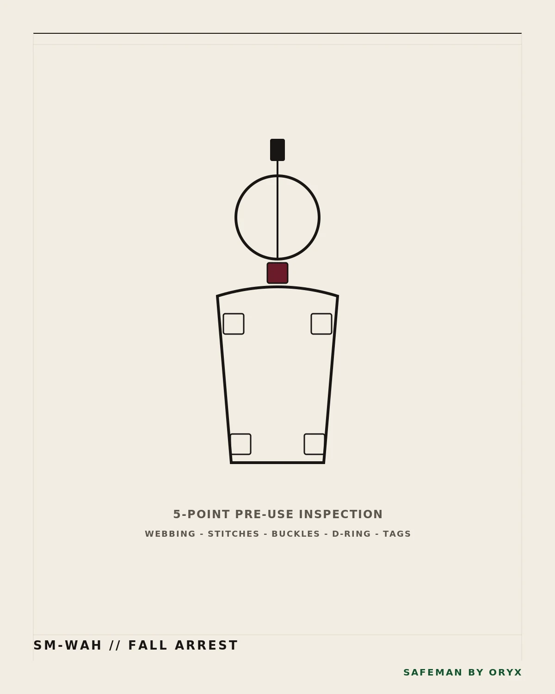
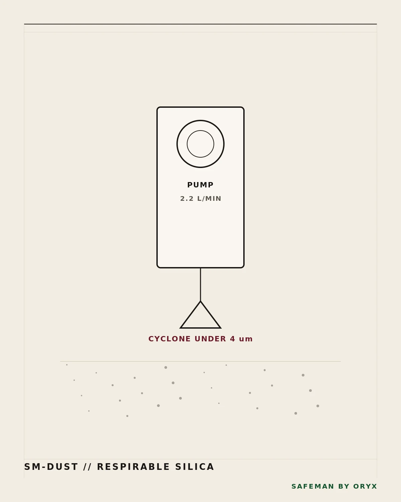
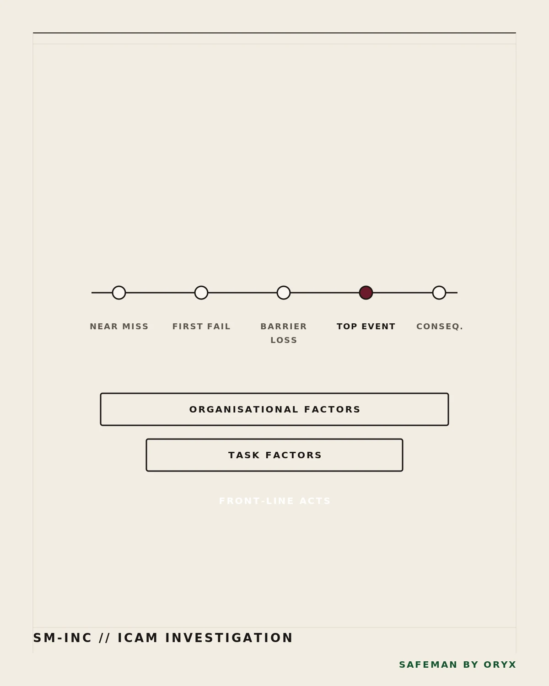

The SM-CORE enrollment
Individual seats, an in-house run at your site, or a public class; the registrar replies with dates, the invoice and access codes.

November 2026 intake: enrollment requests open
The flagship five-day-equivalent corporate safety ticket for HSE teams: ISO 45001 architecture, BowTie risk thinking and 40 notional hours toward a verified credential.

Four modules carry a cohort from the ISO 45001 clause map to an audited environmental register.
Plan-Do-Check-Act applied to ISO 45001:2018 — context, worker consultation, documented information.
Module C1From context to treatment; threats, barriers and consequences mapped on one page.
Module C2Safety file review, mutual agreements and permits from pre-qualification to demobilisation.
Module C3Aspects and impacts registers, the waste hierarchy, emergency preparedness, audit practical.
Module C4Eight questions, ten minutes, drawn fresh from the bank each attempt. Pass mark: seven of eight.
SM-CORE exam
From the registrar’s reply to a credential anyone can check.
Individual seats, an in-house run at your site, or a public class; the registrar replies with dates, the invoice and access codes.

Each learner signs into the student portal with a cohort code and sits the paper under the live clock.

A numbered certificate and PVC pass issue on a pass: signed by Tangi Iigonda, sealed with a QR anyone can check.
No — an industry benchmark; the credit is statutory, not NQA.[1]
HSE managers, safety officers and supervisors.
In the student portal, against the clock, with a fresh draw each attempt.
Yes: the handbook, exam blueprint and service model are open source; the library below carries every file.
Fees are quoted per cohort; the registrar replies with dates and the invoice.
Every course document, free to download and free to reuse under CC BY 4.0.
The four modules, the examination and the credential chain in one printable document.
PDF · 583 KBThe same handbook in plain text, for reading and reuse.
MD · 10 KBHow the timed paper is drawn, marked and passed; the live bank stays unpublished.
MD · 2 KBThe whole SafeMan model: catalogue, engagement flow and verification chain.
MD · 5 KBAll thirteen tickets and seven academy levels, machine-readable.
JSON · 12 KBCreative Commons BY 4.0, the full legal code.
TXT · 18 KBEvery file with its path, size and SHA-256 checksum.
JSON · 4 KBAgents: the manifest at /materials/manifest.json carries the whole library in one file, no authentication.

Core is the five-day spine; the other twelve run one to two days. Pick a family.
CPR and choking (SM-CPR), workplace first aid (SM-FA1), firefighting and fire marshal (SM-FIRE).
3 tickets · 8–16 hrsHeights (SM-WAH), confined space and gas (SM-CSE), lockout (SM-LOTO), HIRA facilitation (SM-HIRA).
4 tickets · 8–10 hrsRespirable crystalline silica and dust control (SM-DUST), noise conservation and hearing protection (SM-NOISE).
2 tickets · 8 hrsPermit to work (SM-PTW), incident investigation (SM-INC), environmental control (SM-ENV), and Core (SM-CORE).
4 tickets · 8 hrs; Core 40


